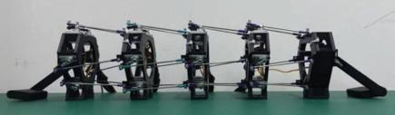
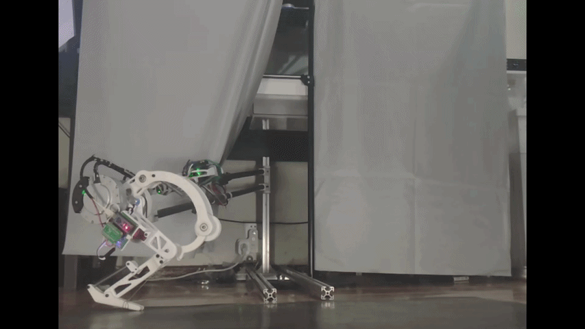
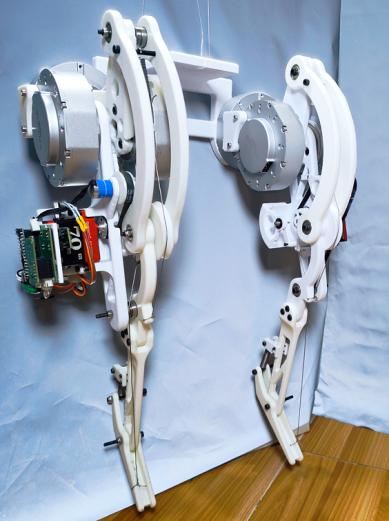
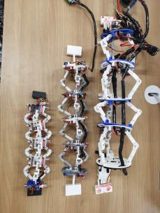
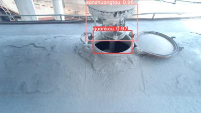

Legged Robots
Mechanical design and dynamic modeling; parallel-elastic actuation and rigid-flexible coupling; trajectory planning, optimization, and motion control.
My research focuses on high-power, energy-efficient legged locomotion via parallel-elastic actuation, rigid-flexible dynamics, and trajectory-control co-optimization. I independently designed and experimentally validated an elastic ankle actuator and a single-leg jumping platform, and completed development of a bipedal mechanical prototype incorporating the actuator. My work spans mechanism design, dynamic modeling, optimization and control, embedded implementation, and hardware validation.
Mechanical design and dynamic modeling; parallel-elastic actuation and rigid-flexible coupling; trajectory planning, optimization, and motion control.
Modular mechanism design and kinematic modeling; multi-gait planning and coordinated control for bio-inspired locomotion.
[1] M. Dou, N. He, L. He, and J. Chen, "Parallel Elastic Ankle Actuator With a Unidirectional Clutch for Explosive Motion in Legged Robots," IEEE Robotics and Automation Letters, vol. 11, no. 5, pp. 6202–6209, 2026. DOI
Contribution: Proposed a parallel-elastic ankle with a one-way clutch, improving explosive output and jump efficiency; independently built and integrated the mechanical and control systems and completed modeling, planning, control, and validation.

[2] M. Dou, N. He, J. Yang, L. He, J. Chen, and Y. Zhang, "Caterpillar-Inspired Multi-Gait Generation Method for Series-Parallel Hybrid Segmented Robot," Biomimetics, vol. 9, no. 12, Art. no. 754, 2024. DOI
Contribution: Proposed the Stable Segment Update method and inverse-kinematics framework for unified multi-gait generation; completed kinematic modeling, gait and trajectory planning, and electrical-control system development.

[3] F. Yue, M. Dou*, J. Yue, C. Li, and N. He, "Gait Planning for 4-Steward Structure Based Caterpillar-Like Robot: A Segmental Progressive Generation Approach," in Proc. 37th Chinese Control and Decision Conference (CCDC), Xiamen, China, pp. 6123–6128, 2025. DOI
Contribution: Defined the research route, supervised prototype mechanical and control-system development and commissioning, and validated coordinated crawling using the planning framework from [2].

[4] J.-X. Chen, N. He, Z. Xu, M. Dou, and L. He, "Design and Implementation of a Novel Two-Wheeled Composite Self-Balancing Robot for Stationary Operations in Unknown Terrain," IEEE Access, vol. 13, pp. 86032–86045, 2025. DOI
Contribution: Responsible for experimental data acquisition and processing.
[5] J. Yue, L. He, F. Yue, M. Dou, N. He, and Z. Li, "Structural Design and Motion Analysis of a Multi-Segment Robot Based on a Six-DOF Parallel Mechanism," Machine Tool & Hydraulics, vol. 53, no. 15, pp. 43–49, 2025. DOI
Contribution: Developed the Stewart-unit multi-segment robot model and structural-optimization framework; led master's students in prototype design, system integration, debugging, and performance testing.
[M1] M. Dou, N. He, L. He, and J. Chen, "Knee-Ankle Synergistic Parallel-Elastic Jumping Leg: Design, Modeling, and Pareto-Frequency-Guided Optimization," submitted to IEEE/ASME Transactions on Mechatronics.
Contribution: Proposed a knee-ankle synergistic parallel-elastic jumping leg and performed mechanism-trajectory co-optimization of energy allocation, landing impact, and joint loading over the full jumping cycle.

* Corresponding author.
Existing foundation: I independently designed and fabricated the elastic ankle actuator and completed trajectory planning, motion control, numerical simulation, multibody-dynamics simulation, and experimental validation for single-leg jumping. Building on this work, I developed a bipedal robot mechanical-system prototype incorporating the actuator.

PID; model-based optimal control (LQR and MPC); reinforcement-learning control (PPO); MuJoCo control simulation.
Circuit design and PCB layout; embedded and IoT systems; sensor acquisition and signal processing; Android and PC host applications; I2C, CAN, and RS-485.
SolidWorks; Adams; overall mechanical-system design; component selection; 3D printing; prototype assembly and experimental platforms.
C/C++, MATLAB, and Python; PyTorch for YOLO training and inference.
Led the overall technical route and established a system architecture integrating modular mechanisms, distributed electrical control, inter-segment communication, and multi-gait planning. Led mechanical-structure optimization, electrical-control architecture, and PCB design; implemented I2C inter-module communication; completed gait planning, prototype integration, and experimental commissioning; and demonstrated turning, uphill locomotion, and inchworm-, caterpillar-, and earthworm-inspired gaits.

Led the closed-loop technical route and system architecture for target recognition, binocular localization, coordinate transformation, PLC control, and IoT monitoring. Completed YOLO recognition, binocular-camera calibration, 3D coordinate transformation, data acquisition, and communication-protocol development; led controller design and on-site commissioning; and supervised PLC gantry positioning and mechanical fixture design, enabling automatic industrial-target recognition, spatial localization, and unmanned material discharge.
